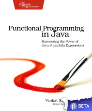
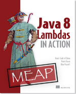

class: center, middle # Java 8 :: Project Lambda # λ Ivar Conradi Østhus ico@finn.no --- # Java 8 - a few new (important) features - **Lambda expressions** - *greater impact than generics in Java 1.5* - **Stream API** - **Default methods in interfaces** - Compact Profiles - Nashorn JavaScript Engine - More annotations - Parallel Array Sorting - (new) Date & Time API - Concurrency Updates - . - . - . - **Scheduled for March 2014** Complete list: http://openjdk.java.net/projects/jdk8/features --- class: center, middle # **Warning:** # *a lot of code examples in this presentation!* --- # Imperative style: for each element ``` List<Integer> numbers = Arrays.asList(1, 2, 3, 4, 5, 6); ``` ``` //1: old loop for(int i = 0; i < numbers.size(); i++) { System.out.println(i); } ``` ``` //2: enhanced for-loop for(Integer n : numbers) { System.out.println(n); } ``` <!-- - Very low level and we need to write all steps on the way - Extra mutable garbage variables - Must know **how** to iterate a list of elements - Easy to introduce bugs --> --- # Declarative style: for each element ``` List<Integer> numbers = Arrays.asList(1, 2, 3, 4, 5, 6); ``` ### ``` public interface Iterable<T> { ... void forEach(Consumer<? super T> action); ... } ``` ### With annonymous inner class: ``` numbers.forEach(new Consumer<Integer>() { public void accept(Integer number) { System.out.println(number); } }); ``` ### With lambda expression: ``` numbers.forEach((Integer n) -> System.out.println(n)); ``` --- # What is a functional interfaces? ``` @FunctionalInterface public interface Predicate<T> { boolean test(T t); } ``` - **one** abstract unimplemented method - optional @FunctionalInterface annotation - already a lot of functional interfaces in java - Java API will be full of functional interfaces --- # Functional interfaces added in Java 8 ``` Counsumer<T> //takes an input T and performs an operation on it. Supplier<T> //a kind of factory, will return a new or existing instance. Predicate<T> //Checks if argument T satisfies a requirement. Function<T, R> //Transform an argument from type T to type R. ``` --- ## Methods taking a *functional interface* will accept: - an anonymous inner class - a lambda expression - a method reference <!-- # We can use lambdas with methods which takes a *functional interface* as argument Notater: - Hva er functional interface? - Bonus: existing libraries are now forward-compatible to lambdas - Libraries that never imagined lambdas still work with them! - Maintains significant investment in existing libraries - Fewer new concepts - invokedynamic to capture lambda expressions --> --- # Lambda: types ### **Single expression** ``` (Integer i) -> i * 2; ``` ### **Statement block** ``` (int x, int y) -> { return x + y; } //multiple lines of code (int n) -> { int value = n*2; return value; }; ``` --- # Lambda: type inference ``` (Integer i) -> i * 2; (i) -> i * 2; i -> i*2; //Multiple params (int x, int y) -> x + y (x, y) -> x + y ``` --- # Reuse lambdas ``` List<Integer> numbers = Arrays.asList(1, 2, 3, 4, 5, 6); ``` ### **Function** ``` public static Consumer<Integer> consumer() { return (Integer n) -> System.out.println(n); } numbers.forEach(consumer()); ``` ### **Variabel** ``` public Consumer<Integer> consumer = (Integer n) -> System.out.println(n); numbers.forEach(consumer); ``` --- # Method reference ``` List<Integer> numbers = Arrays.asList(1, 2, 3, 4, 5, 6); //Lambda numbers.forEach(n -> System.out.println(n)); //Method reference numbers.forEach(System.out::println); ``` --- # Lambda summary ``` (int x, int y) -> { return x + y; } (x, y) -> x + y x -> x + x () -> x ``` - enables better libraries - uses lexical scoping - requires *effectively final* --- class: center, middle # The Java Stream API --- # Task: Double and sum all even numbers ``` List<Integer> numbers = Arrays.asList(1, 2, 3, 4, 5, 6); ``` ### Imperative solution ``` int sumOfDoubledEvenNbrs = 0; for(int number : numbers) { if(number % 2 == 0) { sumOfDoubledEvenNbrs += number * 2; } } ``` ### Declarative solution ``` int sum = numbers.stream() .filter(n -> n % 2 == 0) .mapToInt(n -> n * 2) .sum(); ``` --- # The Java Stream API - Integration of lambda expressions with the Collection API's - An abstraction for specifying aggregate computation on data set - Streams are like iterators, yield elements for processing - Streams can be finite and infinite - **Intention**: *replace loops for aggregate opterations* ### Streams gives us: - more readable code - more composable operations - parallelizable <!-- Why did they not just add filter, map etc directly on Java Collections? --> ### ### Think of Stream pipelines as builders: - have stream source - add many intermediate operations - execute pipeline **ONCE** *Sidenote: Pipes in linux* ```bash cat index.html | tr "[A-Z]" "[a-z]" | grep lambda | sort ``` --- ## Source - collections, arrays, generator functions, IO - _can be finite or infinite_ - **do NOT modify the source during query** ## Intermediate operations - *filter, map, mapToInt, flatMap, sorted, distinct, limit...* - stateless or statefull - lazy -- returns new streams - lambdas used to transform or drop values ## Terminal operation - **Aggregation**: *toArray, toList, reduce, sum, min, max, count, anyMatch, allMatch* - **Iteration**: *forEach* - **Searching**: *findFirst, findAny* - produces a result / side-effect --- # Stream: sources ### Collections ``` List<Person> persons = new ArrayList<>(); Stream<Person> personStream = persons.stream(); ``` ### IO ``` Stream<String> lineStream = bufferedReader.lines(); ``` ### Stream factories ``` //range IntStream numbers = IntStream.range(0, 10); //random numbers DoubleStream randomDoubles = new Random().doubles(); IntStream randomInts = new Random().ints(0, 10); ``` _(Primitive streams are included for performance reasons)_ --- # Stream: intermediate operations - returns a *Stream*, not elements - they are lazy ### filter ``` Stream<Person> stream = persons.stream().filter(p -> p.getAge() > 17); ``` ### map ``` Stream<String> stream = persons.stream().map(Person::getName); ``` ### mapToInt ``` IntStream stream3 = persons.stream().mapToInt(Person::getAge); ``` --- # Stream: statefull intermediate operations - harder to parallelize - Examples: *limit, substream, sorted, distinct* ``` Stream<Person> sortedStream = persons.stream() .filter(p -> p.getAge() > 17) .sorted((p1, p2) -> p1.getAge() - p2.getAge()); ``` --- # Stream: terminal operations - return non-stream elements - eager: force evaluation of the stream Task: Find the average age in Sandnes ``` OptionalDouble average = persons.stream() .filter(p -> p.getCity().equals("Sandnes")) .mapToInt(p -> p.getAge()) .average(); ``` _(How would an imperative solution look like?)_ --- # Imperative solution Task: Find the average age in Sandnes ``` int sum = 0; int count = 0; for(Person person : persons){ if(person.getCity().equals("Sandnes")) { sum += person.getAge(); count ++; } } double averageAgeInSandnes = (double)sum / count; ``` The Stream solution: ``` OptionalDouble average = persons.stream() .filter(p -> p.getCity().equals("Sandnes")) .mapToInt(p -> p.getAge()) .average(); ``` --- # Stream: Collector - aggregate values in to a container - many predefined collectors in `java.util.stream.Collectors` - counting - averaging/summarizing/sum/min - toList/toMap/toSet - reducing - groupingBy - mapping Collectors.toSet() ``` Set<String> names = persons.stream() .map(Person::getName) .collect(toSet()); ``` Resultat: ``` [Ivar Østhus, Donald Duck, Ola Hansen, Kari Normann, Silje Hansen, Knerten Lillebror] ``` --- # Stream: Collector - groupingBy Collectors.groupingBy: age ``` Map<Integer, List<Person>> personsByAge = persons.stream().collect(groupingBy(Person::getAge)); ``` groupingBy age, and only get their names ``` Map<Integer, List<String>> nameByAge = persons.stream() .collect(groupingBy(Person::getAge, mapping(Person::getName, toList()))); ``` <!-- groupingByAge, and only count elements in group ``` Map<Integer, Long> agesCount = persons.stream() .collect(groupingBy(Person::getAge, counting())); //output {16=1, 32=1, 28=2, 12=1, 29=1} ``` --> <!-- # Collector: joining ``` persons.stream() .filter(p -> p.getAge() > 18) .sorted((p1, p2) -> p1.getAge() - p2.getAge()) .map(p -> p.getAge() + ":" + p.getName()) .collect(Collectors.joining(", ")); ``` Output: ``` 21:Ola Hansen, 28:Ivar Østhus, 29:Kari Normann, 42:Donald Duck ``` --> --- # Stream the contents of a CSV file *Map persons in a CSV to a list of persons and return the 50 first adults. * ```csv name, age, city, country Ivar Østhus, 28, Oslo, Norway Viswanathan Anand, 43, Mayiladuthurai, India Magnus Carlsen, 22, Tønsberg, Norway .. ``` ``` InputStream is = new FileInputStream(new File("persons.csv")); BufferedReader br = new BufferedReader(new InputStreamReader(is)); List<Person> persons = br.lines() .substream(1) .map(toPerson) .filter(isAdult) .limit(50) .collect(toList()); //lambdas public static Function<String, Person> toPerson = (line) -> { String[] p = line.split(", "); return new Person(p[0], Integer.parseInt(p[1]), p[2], p[3]); }; public static Predicate<Person> isAdult = p -> p.getAge() > 17; ``` --- # Parallel Streams <!-- - Just need to change from "stream()" to "parallelStream()" - A behavioral parameter (lambda) may be invoked concurrently - Must not access any state that might change during the operation - This constraint gives us “wiggle room” to optimize - fork/join from java7 under the hood - order not guaranteed --> ``` //Sequential OptionalDouble average = persons.stream() .filter(p -> p.getCity().equals("Sandnes")) .mapToInt(p -> p.getAge()) .average(); //Parallel OptionalDouble average = persons.parallelStream() .filter(p -> p.getCity().equals("Sandnes")) .mapToInt(p -> p.getAge()) .average(); ``` --- # Parallel Streams: visual model  <!-- - Always more work, but might take less time - For small and simple problems, sequential is usually still faster - lambda kan bare akksessere "effective final vars" --> (Source: https://oracleus.activeevents.com/2013/connect/sessionDetail.ww?SESSION_ID=7942) --- # Streams: performance ``` N = size of source Q = cost per-element through the pipeline N * Q ~= cost of pipeline ``` - Larger N * Q → higher chance of good parallel performance - Gnererally it is easier to know Ns - For small data sets → sequential usually wins - Complex pipelines are harder to reason about - What are the stream characteristics? - **Do not assume parallel is always faster!** <br /><br /><br /> #.center[**MEASURE!!!**] <!-- # Parallel Streams: Awesome FINN example ``` List<Long> awsomeFinnAdIds = awesomeAdService.fetchAwsomeAds(); List<Ad> awesomeFinnAds = awsomeFinnAdIds.parallelStream() .map(adService::fetchAd) .filter(Ad::isActive) .collect(toList()); ``` --> --- # Interface: default methods - Java Collections Framework - designed fifteen years ago - without a functional orientation - do not have a method forEach, stream, .. - Until now adding new methods to an interface has been impossible without forcing modification to existing classes - Solution: *default methods in interfaces* - (also called virtual extension methods or defender methods) - A clever way to enhance exisiting interfaces with new methods ``` interface Iterator { // existing method declarations default void skip() { if (hasNext()) next(); } } ``` --- # Stream API: summary - **Sources:** - Collections, Generator functions, IO - **Intermediate functions:** - filter, map, sorted, limit - lazy - **Terminal operations:** - sum, max, min, collect, groupingBy - eager --- ## Books: <div> <div style="width: 49%;display: inline-block;">  <br /> Functional Programming in Java <br /> *Vankat Subramaniam* </div> <div style="width: 49%;display: inline-block;">  <br /> Java 8 Lambdas in Action <br /> *Raoul-Gabriel Urma, Mario Fusco, and Alan Mycroft* </div> </div> ## Presentations: - https://oracleus.activeevents.com/2013/connect/sessionDetail.ww?SESSION_ID=7942 - https://oracleus.activeevents.com/2013/connect/sessionDetail.ww?SESSION_ID=7504 - http://www.slideshare.net/jaxlondon2012/lambda-a-peek-under-the-hood-brian-goetz ## Videos: - http://parleys.com/channel/5243df06e4b0d1fb3c78fe31/presentations?sort=date&state=public